麻婆豆腐
豆腐、牛肉末、豆瓣酱和花椒面。行内讲究麻、辣、烫、香、酥、嫩、鲜、活八个字。
Chengdu · 北纬 30°40′ · 东经 104°04′ · 海拔约 500 米
成都古称锦官城、蓉城，是天府之国的中心。这里有三千年前的青铜与黄金，有红油与花椒，有吃竹子的熊猫，也有一坐就是一下午的老茶馆。
影像
今日蜀签 · 娱乐签，不作预测
五个入口
别名
都江堰让成都平原旱涝保收，成了粮仓，这个称呼由此而来。
汉代起蜀锦是成都的重要产业，朝廷设官管理，城因此得名。
相传五代后蜀的孟昶下令在城头遍种芙蓉，花开时满城如锦。
古蜀 · 三千年的时间线
成都的城市史超过两千三百年，而在建城之前，这片平原上已经有了自成一格的青铜文明。
三件最有代表性的青铜器，拍自展厅。
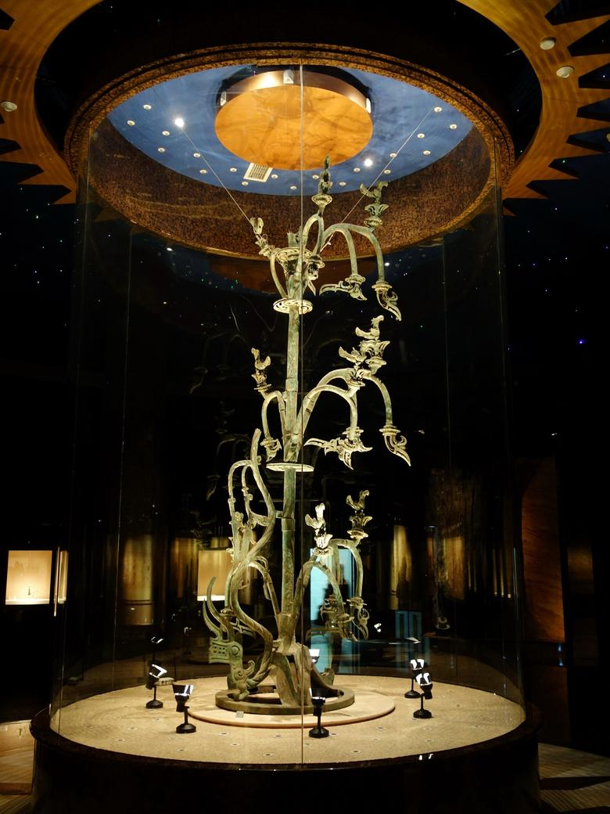
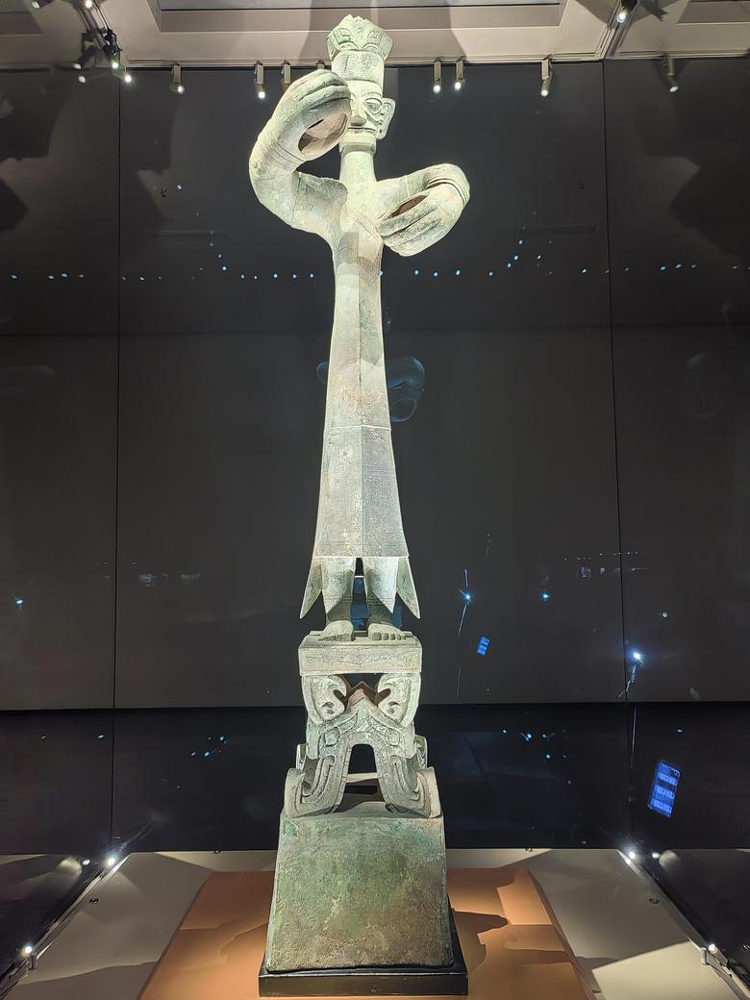
广汉的三星堆遗址出土了青铜大立人、纵目面具和青铜神树，造型与同时期中原的青铜器很不一样，至今仍有许多未解之谜。
成都西侧的金沙遗址出土金面具、玉琮、象牙，以及太阳神鸟金饰。这个图案在 2005 年成为中国文化遗产标志。
秦灭蜀后在此筑城，成都的城市史由此一直延续到今天。
李冰主持修建。鱼嘴分水，飞沙堰泄洪排沙，宝瓶口引水入平原，两千多年后仍在使用。
蜀锦成为重要产业，朝廷设官管理织锦，成都因此有了锦官城的名字。
刘备在成都称帝。后世在此纪念刘备与诸葛亮，就是今天的武侯祠。
杜甫在战乱中来到成都，在浣花溪畔安顿下来，在蜀中写下二百多首诗。唐代还有“扬一益二”的说法，益州就是成都。
成都商人发行的交子，被认为是世界上最早的纸币之一。
常住人口超过两千万，同时拥有双流和天府两座国际机场。
十二道光芒环绕太阳，外圈四只飞鸟，也是成都的城市标志。
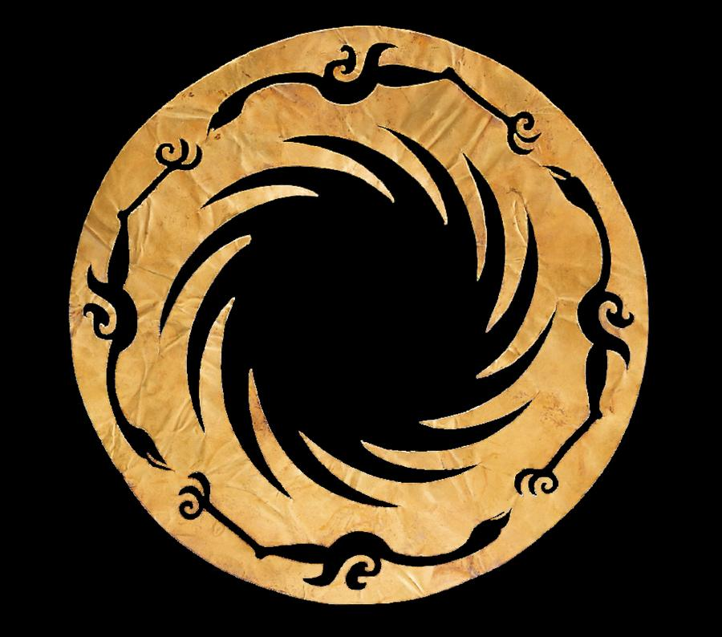
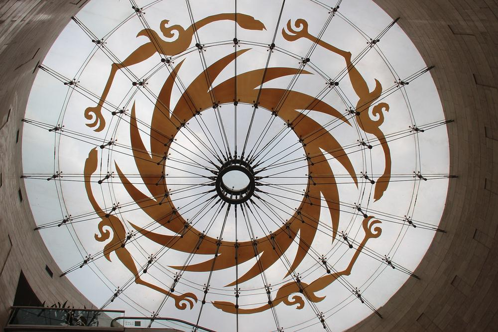
两千多年前修建的水利工程，至今仍在分水、灌溉。
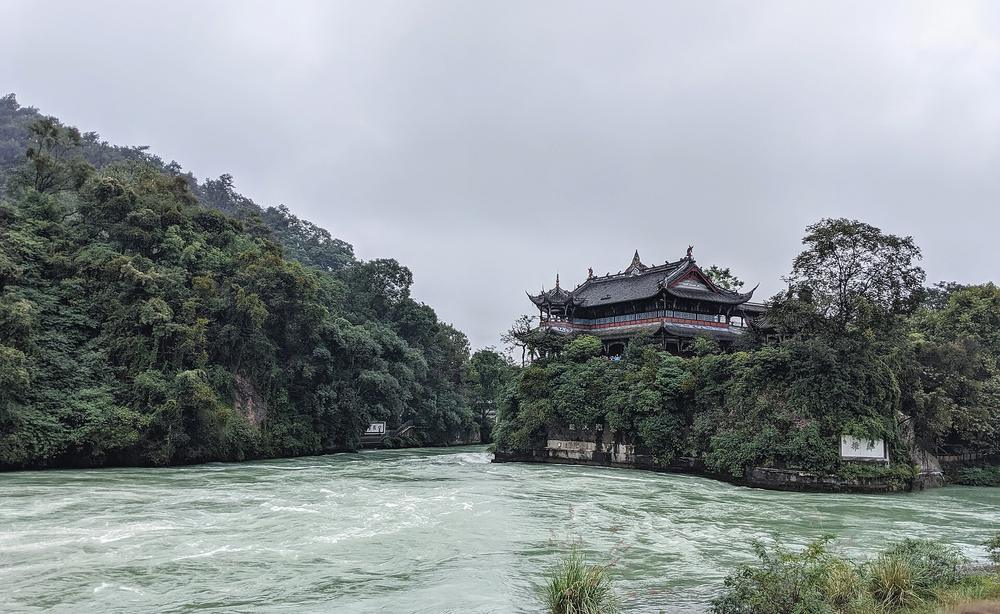
三处遗址与水利工程的实拍照片。
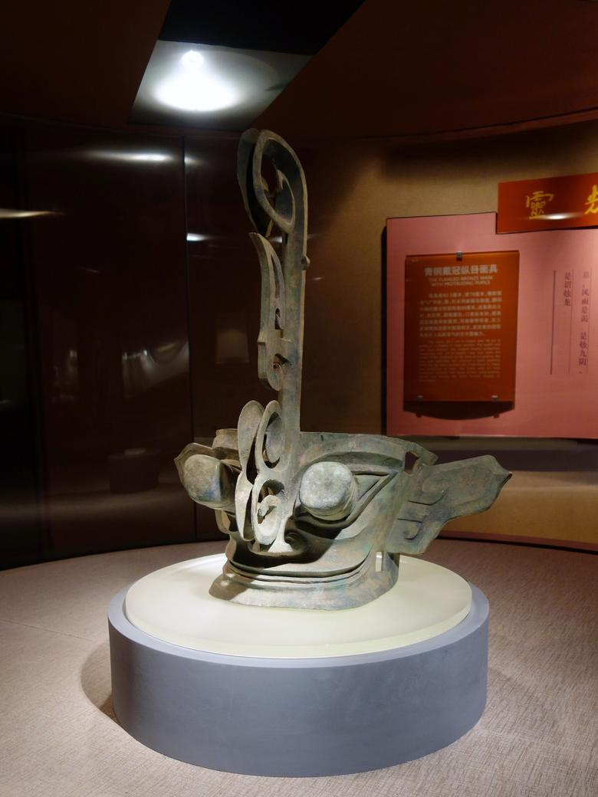
停留时间是常见的参观节奏，按你自己的速度调整。
太阳神鸟金饰、金面具，以及遗址发掘现场。想了解古蜀，从这里开始最顺。
青铜大立人通高约 2.6 米，纵目面具宽约 1.38 米，近看比照片震撼得多。
红墙、竹径、古柏和三国文物。隔壁就是锦里，可以顺路。
复原的茅屋、诗史堂、竹林与溪水，适合慢慢走。
看鱼嘴、飞沙堰和宝瓶口，再走一趟安澜索桥。可以和青城山排在同一天。
热门景点常需要提前预约，开放时间与规则以景区官方公告为准。
川味 · 麻、辣之外还有很多味
川菜的麻来自花椒，辣来自辣椒，郫县豆瓣负责打底。下面十二道菜按辣度分了级，拖动滑块就能筛出适合你的。
红油锅底和鸳鸯锅，是第一次吃火锅最常见的两种选择。
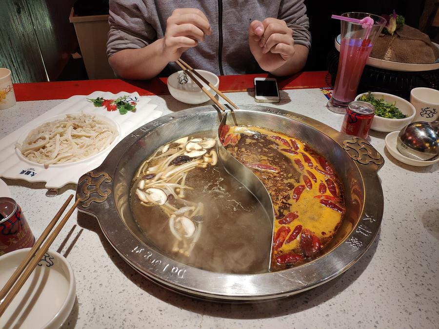
豆腐、牛肉末、豆瓣酱和花椒面。行内讲究麻、辣、烫、香、酥、嫩、鲜、活八个字。
五花肉先煮后炒，配蒜苗和豆瓣，是四川家常菜里最有代表性的一道。
菜里没有鱼，味道来自泡辣椒、葱姜蒜和糖醋，酸甜带一点微辣。
碗底是红油、芽菜和花椒，上面盖肉末。拌匀再吃，不要急着喝汤。
红油水饺，味道偏甜，辣得温和，是适合入门的一碗。
抄手就是馄饨，皮薄馅嫩，可以选清汤，也可以拌红油。
牛肉、牛杂切片，淋上红油、花椒和芝麻，是凉菜里的招牌。
鸡蛋面糊煎成薄饼，对折后夹甜馅或咸馅，现做现吃。
糯米团裹上黄豆粉，淋红糖浆。软糯香甜，不辣。
红糖水里的透明凉粉，常加山楂、葡萄干和花生碎，吃完辣的来一碗。
牛油锅底配毛肚、鸭肠、黄喉。成都人常用香油加蒜泥做蘸碟，能压一压辣。
食材穿在竹签上下锅，吃完按签数结账。一个人也能吃得很自在。
这个组合下没有菜品，把辣度上限调高一点试试。
同一个城市，锅也有不同的玩法。
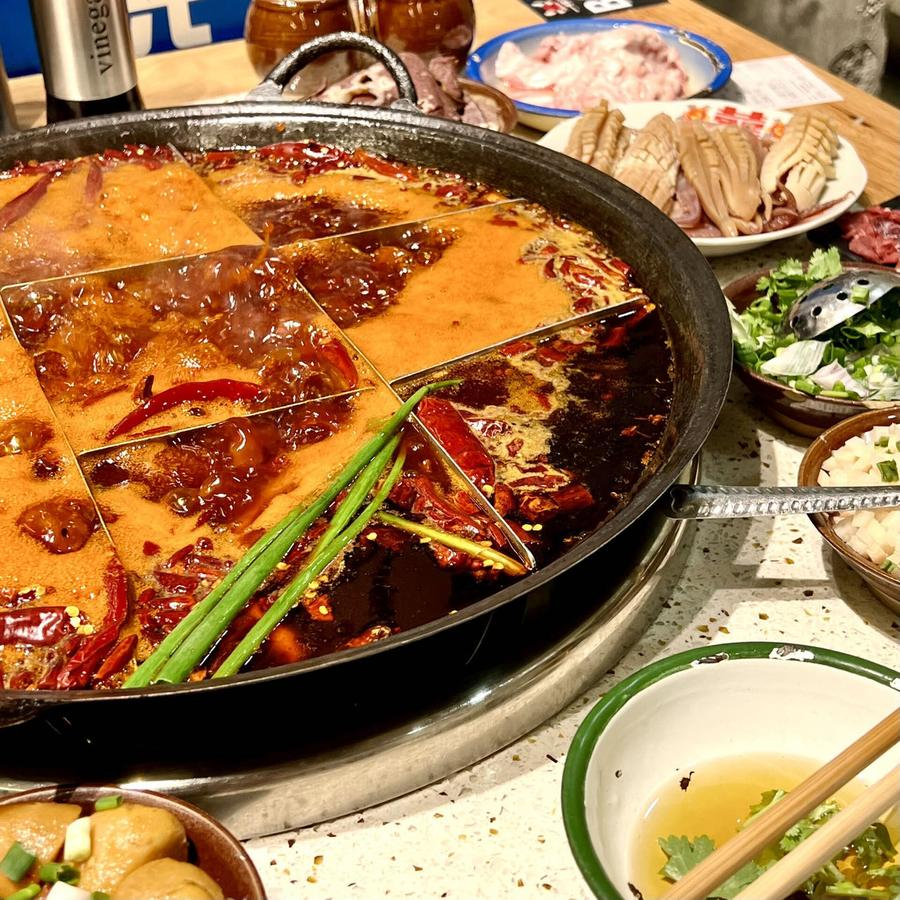
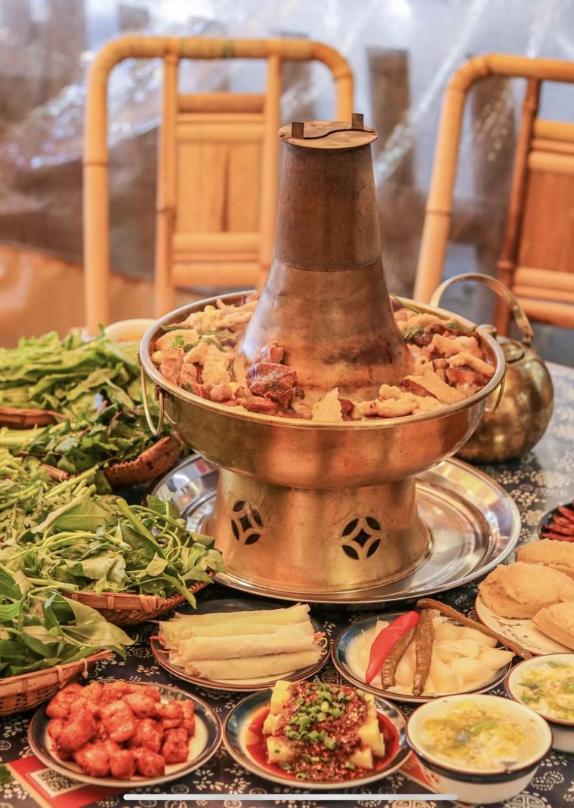
川菜有二十多种味型。这六种在餐馆菜单里最常遇到。
花椒加辣椒，火锅和麻婆豆腐的底味。
以豆瓣酱为主，咸鲜微辣，回锅肉就是这一路。
泡辣椒、葱姜蒜加糖醋，酸甜咸辣兼有。
酸甜像荔枝，宫保鸡丁常见的是糊辣荔枝味。
红油、酱油加一点糖，水饺和凉菜里常见。
麻辣咸甜酸鲜香同时出现，是最难描述的一种。
熊猫 · 成都大熊猫繁育研究基地
基地在市区北边，距市中心约 10 公里。圈养熊猫通常在早上喂食时最活跃，中午常常睡觉，所以最好开园后尽快进去。
常见规律，具体看熊猫个体和天气，仅供参考。
基地热门时段需提前预约，交通与购票方式以基地官方信息为准。
熊猫前掌有一块特化的腕骨，俗称伪拇指，用来抓握竹子。
幼崽刚出生只有约 100 克，通体粉红，几乎没有毛。
竹子的热量低，所以熊猫清醒的大部分时间都在进食，通常超过十个小时。
2016 年，世界自然保护联盟把大熊猫的等级从“濒危”下调为“易危”。2021 年，大熊猫国家公园正式设立。
如果想多走走，这几处都在成都周边。
方向与都江堰、青城山一致，可以和水利工程排在同一天。
道教名山，山路有林荫，与都江堰在 2000 年一同列入世界遗产。
成都东侧的山脊，天气好时能远眺成都平原。
冬季有雪景，是成都人看雪的首选。
茶与戏 · 老成都的日常
成都人说“摆龙门阵”，意思是闲聊。茶馆是这件事发生的地方，戏和手艺也大多从这样的市井里长出来。
盖碗茶由茶盖、茶碗、茶托三部分组成，老辈人说盖为天、碗为人、托为地，天地人合在一起才是一碗完整的茶。
喝的时候用盖子轻轻拨开茶叶，再从缝隙里啜饮。茶馆里常见的是茉莉花茶，也有峨眉山的竹叶青、雅安的蒙顶山茶。
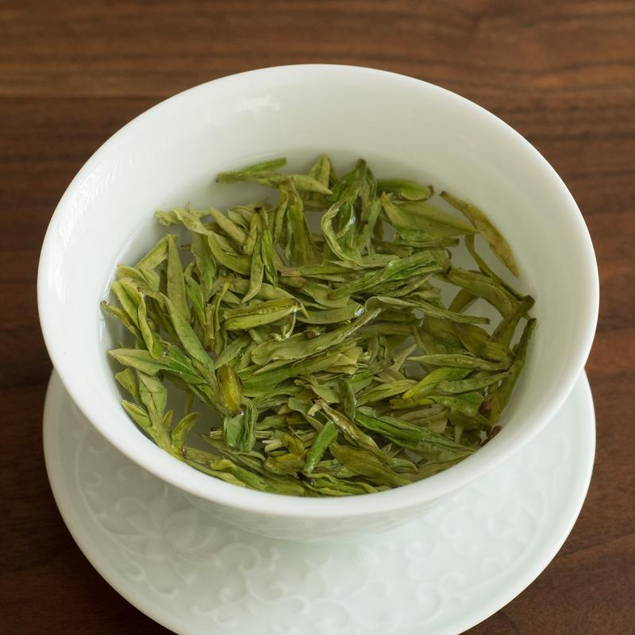
想要市井气，人民公园的老茶社比游客集中的景区更自在。
竹椅、小方桌、一碗茶，没有人催你走。打牌、读报、发呆都行。
手持长嘴铜壶，隔着一段距离把水准确注进碗里，是茶馆里的一门手艺。
成都茶馆里常见的服务，师傅用小工具帮你清理耳朵。第一次尝试可以先看看别人怎么做。
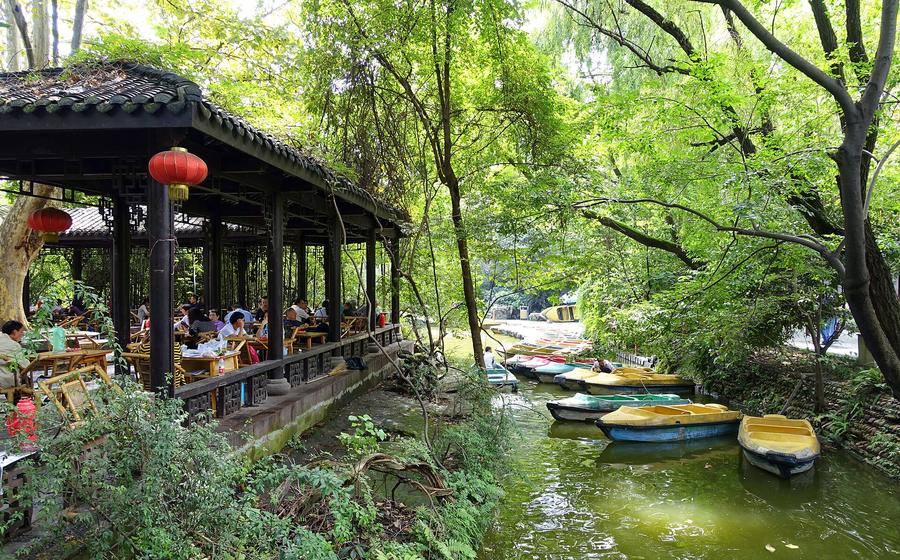
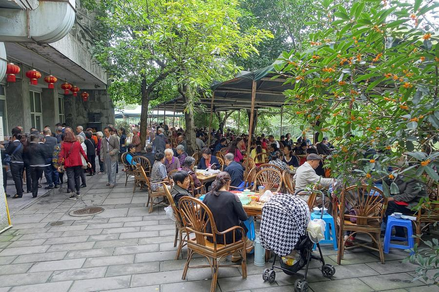
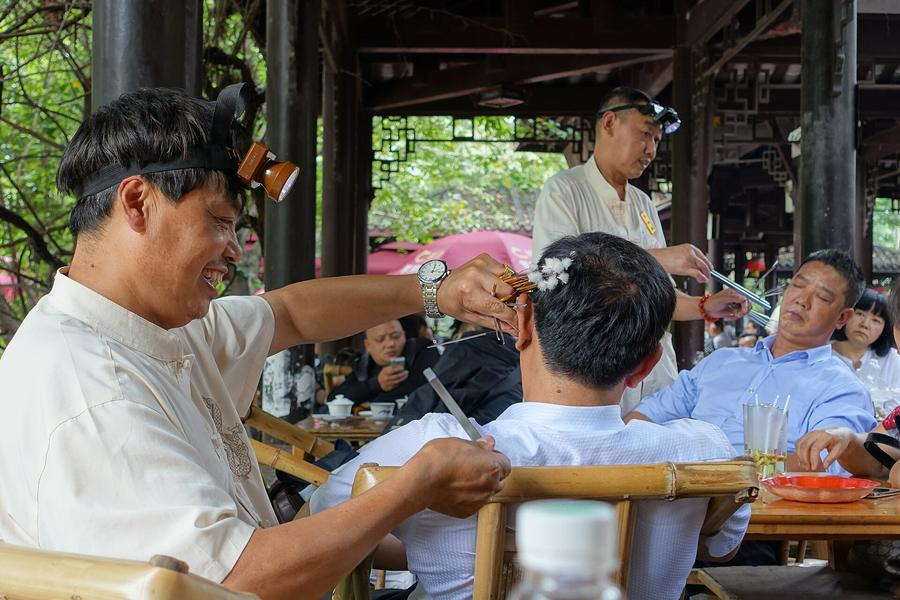
川剧由五种声腔合成，高腔的特点是一人唱、众人在后台帮腔。
最出名的绝活是变脸，演员在一两秒内换掉脸谱，常常就在观众眼前。还有吐火、滚灯等特技。茶园式的小剧场离舞台近，看得最清楚，演出场次请提前查询。
成都织锦的传统，汉代起就很有名，织造技艺已列入国家级非遗。
以软缎和彩丝为主，针法细密，常见题材有熊猫、芙蓉和花鸟。
在木胎或金属上层层髹漆再打磨，成品温润有光。
把银拉成细丝，再编织、焊接成立体造型，工序极其繁复。
四川竹资源丰富，青神一带的竹编尤其精细，可细如发丝。
用热糖浆在石板上勾出图案，先是玩，凉了就可以吃。
三日行程 · 古蜀、熊猫、近郊
第一天看古蜀与老城，第二天看熊猫与茶馆，第三天二选一去近郊。每天只排三到四件事，留出吃饭和发呆的时间。
先去金沙打底，再去武侯祠，晚上吃火锅。
看太阳神鸟金饰和金面具，约 2–3 小时。
回锅肉、麻婆豆腐、一碗米饭，先适应一下口味。
两处相邻，先看祠堂再逛锦里。锦里游客多，想清静就早点去。
点鸳鸯锅更稳妥。饭后在锦江边散步，九眼桥一带夜景很热闹。
早起看熊猫，下午在茶馆里慢下来，晚上看川剧。
开园后尽快入园，先看喂食，约 3 小时。
担担面、钟水饺、龙抄手，选一家人少的小店。
坐一两个小时，看人、听口音。之后可以去宽窄巷子，或改去杜甫草堂。
折子戏加变脸，约一个半小时，建议提前订座并确认场次。
两条线路都要早出发，选一条就好。
高铁约半小时到都江堰。看鱼嘴、飞沙堰、宝瓶口，走安澜索桥。
景区附近有不少本地馆子，可以尝尝当地的做法。
山路有林荫，体力一般的话走到半山，再乘车或缆车下行。
留出机动时间，节假日路上可能较堵。
距成都约 40 公里，建议提前预约，早点到。先看青铜大立人和纵目面具。
景区附近就餐，吃完回馆里接着看。
一号神树通高约 3.96 米，也别错过玉器和金器展厅。
走了一天，吃点轻松的。
春季（3–5 月）和秋季（9–11 月）气温适中，最舒服。夏季湿热多雨，冬季阴冷湿润，晴天不多。
勾选状态保存在这台设备的浏览器里。
资料整理于 2026 年 10 月，仅作一般旅行参考。图片为实拍照片，版权归各自摄影者所有。开放时间、预约规则和票价请以景区与场馆的官方信息为准。